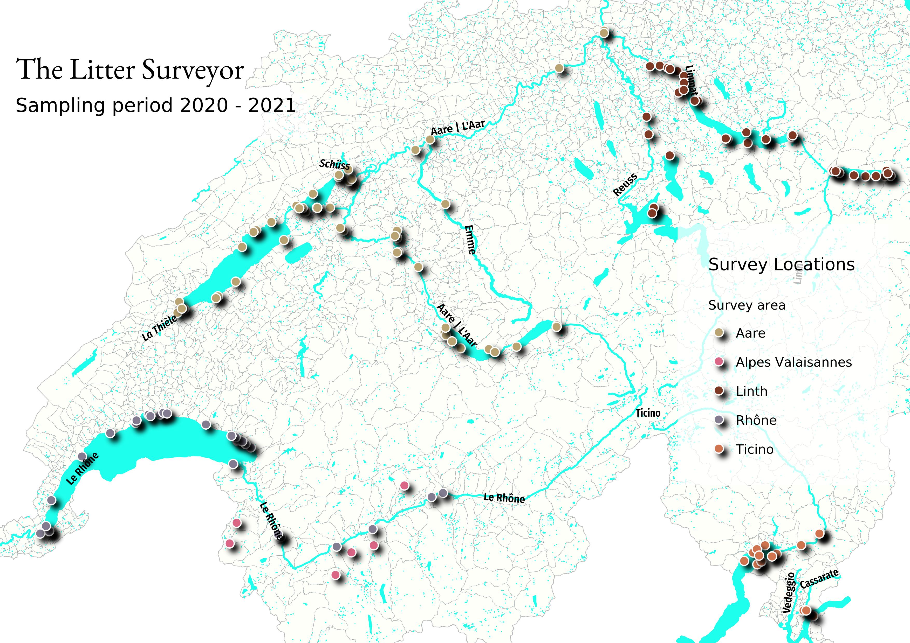

Identification, quantification and analysis of observable anthropogenic debris along swiss river and lakes (IQAASL)¶
IQAASL is a project sponsored by the Swiss Federal Office for the Environment to quantify shoreline trash along swiss lakes and rivers. Multiple small scale litter surveys are completed at different locations within a designated survey area. For the year 2020/2021 the survey areas were defined by the municipalities that border the Aare, Rhône, Ticino and Linth/Limmat rivers and any lakes or rivers that contribute.
Note
This is version 0.02 The review draft: cartography
Content revisions I have received a few comments and will address them during this version. The numerical results will not change, unless somebody finds a mistake!
We are adding the following during this review:
lake and city results
images
and wrapping up the summary
contact roger@hammerdirt.ch
The Litter Surveyor Report¶
This report uses the techniques developed in Switzerland and the EU to identify zones of accumulation and the most common litter objects found along the vast network of Swiss rivers and lakes. This is done using a harmonized data collection protocol and a common measuring and benchmarking scheme that has in use and in active development in Switzerland since 2015 and internationally for decades. [Han13] [Bla18] [HG19].
Current research points to inland lakes as transition points for garbage transported by rivers, some of that trash goes on to the next lake and some of it remains and degrades in the lake where it was deposited. For Switzerland that means our lakes could be sinks or dumps for garbage and that it does not all go on to the ocean. This also means our rivers are highways for the trash that is accumulating in the lakes. [KBK+18]
The Litter Surveyor Report provides a set of tools to interpret current beach litter survey results from the national to the municipal level. The results from past and present beach litter surveys are presented in an objective way and in the context of current events.
Summary¶
The sampling period (SP) was from April 01, 2020 - May 31, 2021. This date range overlaps with the start and end date of the Swiss Litter Report (SLR) [Bla18] the
last national level project to use the standard protocol described in the Guide to monitoring beach litter or any other comparable method.
There were 385 samples from 143 locations in 77 different municipalities.
{kind=link}
Map of survey locations. Locations grouped by survey area. April 2020 - May 2021
The median survey result was 158 pieces per 100 meters (p/100m), with a 95% confidence interval of 137p/100m - 188/p100m. This represents 54,713 recorded objects or \(\approx\) 306kg of trash including 96kg of plastic. The total linear distance surveyed was approximately 20 km or a surface area of 9 hectares. The study was focussed on lakes, 331/385 samples come from 11 lakes. Both Geneva and Zurich are included putting the total municipal population with a stake in this report at 1.7 million.
See the section All Survey areas for complete details.
Trends from 2017¶
When the lake and rivers with samples in both projects are considered there was no statistical difference between the SLR results and IQAASL. The survey results show that in 2020 there were fewer cigarettes, bottle tops and glass fragments and more cotton swabs, industrial sheeting and plastic construction waste.
Comparison of survey results between SLR (2018) and IQAASL (2021)
Top Left: survey totals by date, Top right: median monthly survey total

bottom Left: number of samples with respect to the survey total, bottom right: empirical cumulative distribution of survey totals
The comparison of survey results from both projects also shows that a positive statistically relevant association can be attributed to items related to the consumption of food or tobacco products and the level and type of economic development within 1500m of the survey location. Confirming observations in the SLR that litter survey results were increased in urban and suburban environments.
Other objects like fragmented plastics, fragmented foams and industrial sheeting have few if any positive associations in either project year and the observed levels remained within the range encountered in the SLR.
See the full report More and less trash since 2017
Local versus regional¶
Beach litter surveys are collections of many individual surveys. Here we compare the results of two different groups of items under two opposite land use conditions (see The land use profile. In one group the use case is well known and the connection to human behavior and the land use is uncontested: tobacco and snacks, this group is called contributed. The other group includes fragmented objects of different densities, specific objects less than 5mm and construction plastics, none of which show any association to measurable land use features, this group is called distributed
The results of the test show that the distributed objects are found at similar rates regardless of land use class. Suggesting that there is another mechanism of transport and deposition for these objects that is not directly associated with behavior. The presence of high density plastics in this group and the numerous river or canal discharge sites within 1500 meters of every survey location support previous observations that these objects are being transported to the survey site and a portion of them are sinking or beaching within proximity of the survey site.
See the section Transport an empirical approach
Sources¶
Geographically a potential source can be determined based on the median survey result of an object in relation to its distance from a probable source. An example of this is given in the section Key Statistical Indicators. Certain objects, like pre-production plastic pellets (GPI), cigarette ends or cable-ties are easy to identify and changes in the relative amounts these objects are easy to spot. This is a benefit of using the median value as a baseline.
On a regional basis any stream/river/canal should be considered a source of fragmented plastics and construction plastics. They have a tendency to sink after they transition from river to lake, as result they accumulate near where they are deposited. The communities nearest the hydrological exchanges tend to have increased survey results with a wider variety of objects.
Economically the sources are determined by grouping the codes assigned to the objects according to use or description. Combined food and tobacco items make up 36% of the items found and infrastructure and agriculture are 24% of the total. Objects originating from waste water facilities or objects less than five millimeters make up another 10%. The relative amounts change for each survey area suggesting that local priorities may not always match regional priorities.
See the section Code groups for a complete definition of how the codes were grouped.
Baseline and extreme values¶
A subset of the IQAASL data was used to calculate the median and a target value based on the methods proposed by the JRC Technical document. It is compared here to the subset of data used to generate the baseline value for EU neighboring states. The baseline values are calculated for each survey area and lake in the study and included with the survey results.
In Switzerland the 15th percentile of survey results was 45p/100m with a 95% CI of 39p/100m to 53p/100m. This is twice the proposed target value for beaches in the EU zone of 20p/100m. Surveys in the Meusse-Rhine delta from 2017 and 2018 are very similar to the results recorded in Switzerland. On a per country basis the median of survey results for the EU ranges from 14 (Romania) to 2,430 (France, bay of Biscay). The median was 133p/100m for all EU countries, close to the lower bound of the median survey value for Switzerland in 2020.
Extreme values¶
The definition of extreme values as a matter of policy is not the intent of this document. Mathematically though a value could be defined against which all others are compared. Using the survey total of all objects does not take into account the regional differences and priorities, nor the variety of objects found. Approximately 60% to 70% of the survey total can be described by 10 - 12 objects.
In general survey results were higher in the Rhône survey area (RSA) than the other survey areas, both in terms of the median survey totals and the median totals of the most common objects. This despite having fewer total number of samples than the Linth and Aare survey areas. Differences among regions are common and related to the economic and industrial development of the catchment area.
St. Gingolph has the highest median value of fragmented plastics and construction plastics of any other location with more than three samples in the SP. Similar results were recorded for St. Gingolph in the SLR. These objects can also be found in quantities that regularly exceed the national median on Bielersee and Brienzersee. Industrial pellets are found in all survey areas but high/extreme values have been recorded in Préverenges, Genève, Biel, Lugano and Brienze.
See the section Calculating baseline values for sample calculations and a detailed explanation.
The structure and evolution of this document¶
The purpose is to provide a repeatable method and process to collect and evaluate beach-litter data at a scale that is appropriate to Switzerland and exploitable by all stakeholders. The method and process need to reflect current advances in the field, the needs of stakeholders and faithfully report the survey results as collected by the surveyor.
This document is a collection of scripts written in python and markdown contained in a series of notebooks designed specifically for completing data analysis. This system has been in use for quite some time in the research community. Together those scripts make a book, or a Jupyter Book.
The surveyor uses this application plagespropres to submit data and the report is processed here: end of sampling repo.
Not all tasks have been automated. Land use data is calculated using QGIS and the method to automate this process has not been developed.